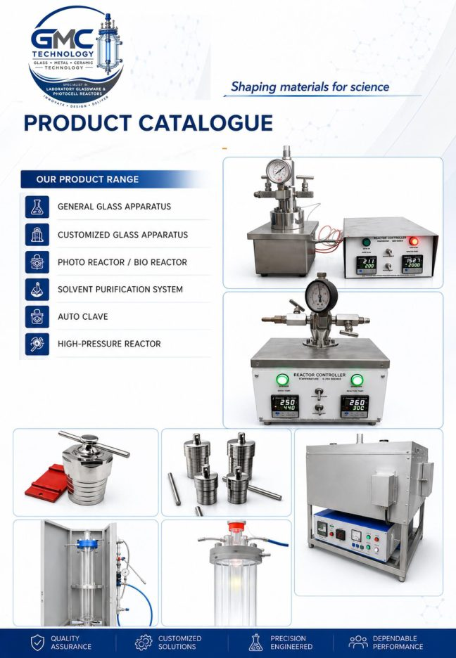
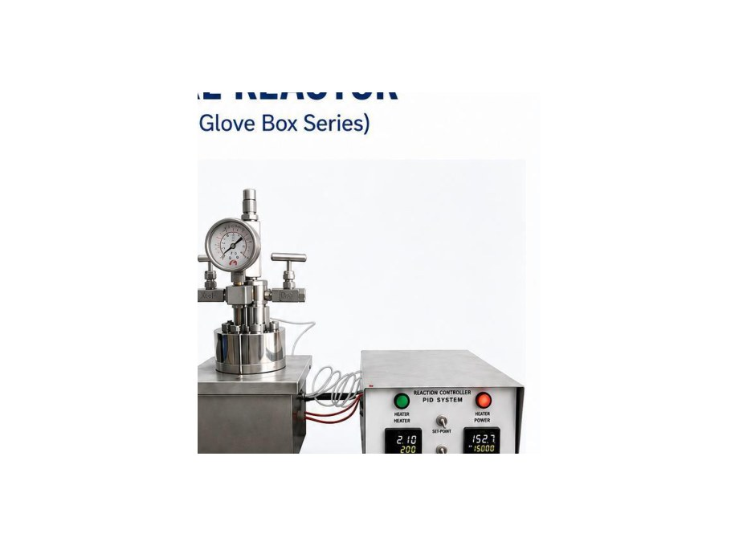
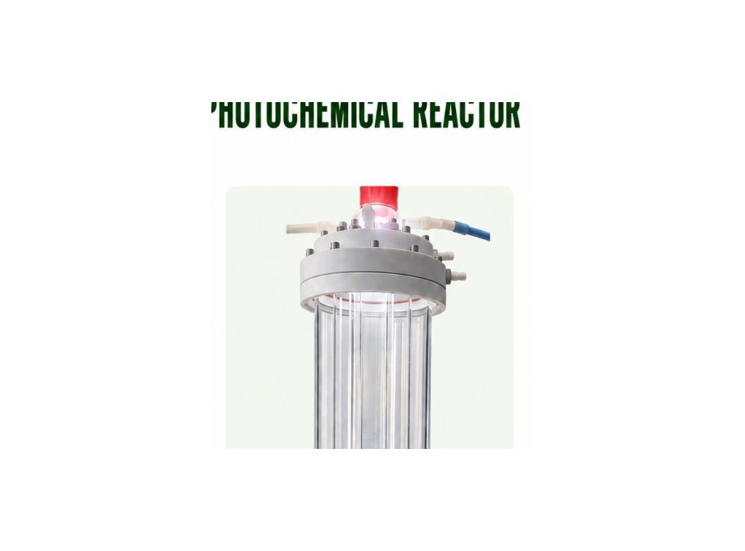
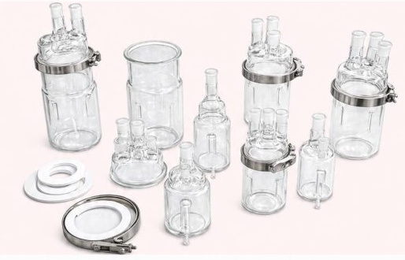
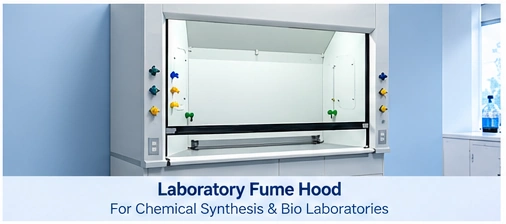
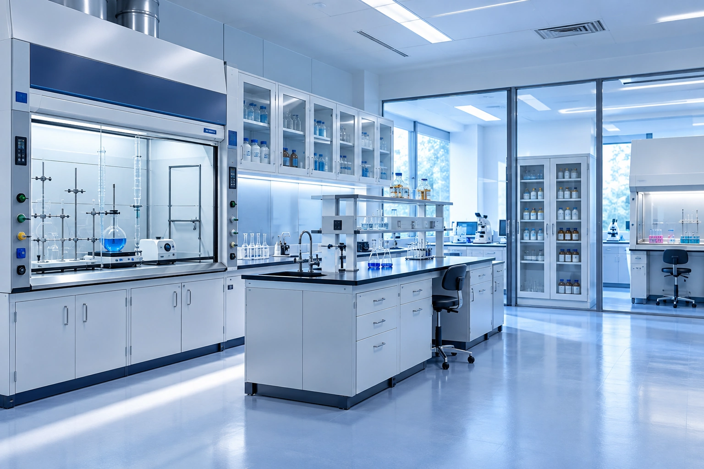
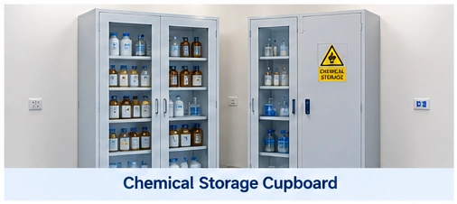

Laboratory equipment engineered for research, industry and custom applications.
GMC Technology is an Indian manufacturer of laboratory equipment, laboratory furniture, scientific glassware, reactors and customized scientific systems for universities, research institutions, industrial R&D laboratories and specialized applications.
Rau, Indore • +91 9630164429 • support@gmctechnology.in • techgmc@gmail.com

Choose the system that fits the science.
Start with the equipment family or the application. Product pages bring together model information, applications, technical specifications and a direct enquiry path.

High-Pressure Reactors & Autoclaves
Spli-t type, integrated and vertical high-pressure reactors, plus hydrothermal autoclaves.
Explore high-pressure systems ↗
Photochemical Reactors
Multi-layer jacketed configurations for controlled UV, visible and xenon irradiation.
Explore photochemical systems ↗
Scientific Glassware
Reaction kettles, condensers, reflux dividers, distillation heads and more.
Explore glassware ↗Laboratory furniture, integrated with the science.
GMC Technology now extends its portfolio to laboratory workstations, fume hoods, chemical storage, overhead cabinets and other configurable laboratory furniture.

Fume Hoods
Project-configured chemical fume hoods for synthesis and laboratories involving chemical hazards.
Explore lab furniture ↗
Benches & Workstations
Wall benches, island tables, instrument workstations and wet-area furniture.
Explore lab furniture ↗
Chemical & General Storage
Chemical storage cupboards, overhead cabinets and tall storage solutions.
Explore lab furniture ↗Customization is a core GMC Technology strength.
Customization is a core part of GMC Technology's engineering approach. Reactor dimensions, pressure and temperature ranges, materials, ports, optical configurations, glassware assemblies and laboratory furniture can be developed around the research or process requirement.
Glass. Metal. Process systems.
From borosilicate glass assemblies and SS316 pressure systems to jacketed photochemical reactors and specialized gas-handling equipment, the portfolio is built around practical laboratory engineering.
View resourcesBrowse by what you need to accomplish.
Hydrogenation
High-pressure reaction and gas-handling systems.
See relevant equipment ↗Hydrothermal synthesis
Elevated-temperature and pressure-assisted synthesis.
See relevant equipment ↗Photochemistry
Controlled UV, visible and xenon irradiation.
See relevant equipment ↗Synthesis & separation
Reaction, reflux, distillation and inert-atmosphere glassware.
See relevant equipment ↗Have a requirement beyond the standard range?
Describe the experiment or process, and use GMC Technology's custom-solution pathway as the starting point.